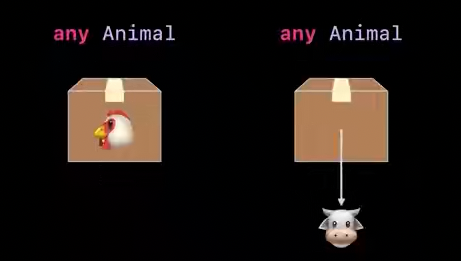

[WWDC22] Embreace swift generics - some, any
[WWDC22] Embreace swift generics - some, any
해당 포스트에서는 제네릭과
some,any를 사용하여 모델을 추상화하는 방법에 대해 설명하고 있습니다.some과any의 개념만 이해하고 싶다면, 다른 포스트를 참고하는 것이 더 좋습니다. 하지만, 이 WWDC 영상에서는 모델을 추상화하면서some과any를 함께 사용하고 있어,some,any그리고 추상화를 위한 사고까지 같이 경험할 수 있는 좋은 영상입니다. 이 영상과 이어지는 인터페이스 설계 WWDC 영상 역시 Swift에서 추상화를 어떻게 접근하는지 같이 고민할 수 있는 좋은 기회가 될 것입니다.
제네릭을 통한 추상화
Swift에서 제네릭은 추상 코드를 작성하는 기본 도구로, 복잡성을 관리하는 데 매우 중요합니다. 코드에는 아이디어를 구체적인 세부 사항과 구분하는 데 유용한 추상화가 여러 가지 방법으로 쓰입니다.
코드를 함수나 변수로 분해하는 것이 대표적인 추상화 방법입니다. 이렇게 하면 기능이나 값을 여러 번 사용할 때 편리합니다. 함수로 추출하면 세부 정보가 숨겨지며, 코드는 세부 정보를 반복하지 않고 현재 일에 대한 아이디어를 표현할 수 있습니다.
let startRadians = startAngle * .pi/180.0
let endRadians = endAngle * .pi/180.0
func radians(angle: Double) -> Double {
return angle * .pi / 180.0
}
Swift에서는 구체적인 유형을 추상화할 수 있습니다. 다른 세부 정보를 가진 유형 집합이 있으면 추상 코드를 작성하여 모든 구체적인 유형과 함께 작업할 수 있습니다.
이번 포스트에서는 코드를 모델링할 때 구체적인 유형을 사용하고, 공통 기능을 식별하여 이를 나타내는 인터페이스를 만들고, 해당 인터페이스를 사용하여 제네릭 코드를 작성하는 워크플로를 살펴보겠습니다.
concrrete type: 일반적으로 사용하는 타입이 구체화된 타입을 번역에 따라서 구체적인 타입, 일반 타입, 콘크리트 타입 등으로 부르고 있습니다.
<T> where T: Idea
Model with concrrete types (구체적인 타입을 사용하는 경우)
첫번째 단계로 제네릭을 사용하지 않고 구체적인 타입만 사용해서 농장 시뮬레이션 코드를 함께 작성하며 추상화하는 방법을 알아보겠습니다.
해당 영상에서는 추상화를 위해서 구조를 조금 복잡하게 복잡한 단계를 거치도록 하고 있습니다.
먼저, ‘Cow‘라는 구조체로 시작합니다. Cow는 Hay(건초)를 먹기 위해서 eat 라는 메소드를 가지고 있습니다. Hay에는 grow 메소드가 있습니다. Hay를 생산하기 위해서는 1차 생산물인 Alfalfa를 만들고 Alfalfa를 수확해야 Cow 먹을 수 있는 Hay를 만들 수 있습니다.
Hay Type의static method gorw를 통해서Alfalfa instance생성Alfalfa를 통해Hay를 수확(harvest)- 수확한
Hay를Cow에게 먹임(eat)
마지막으로, ‘Farm‘이라는 구조체를 추가하겠습니다. 이 구조체는 Cow에게 먹이를 주는 메서드를 가지고 있습니다. 우리는 Cow를 만들어 Farm의 feed 메소드에 넣어주면 위의 3가지 동작을 수행하도록 feed 메소드를 작성해야 합니다.
struct Cow {
func eat(_ food: Hay) {...}
}
struct Hay {
static func grow() -> Alfalfa {...}
}
struct Alfalfa {
func harves() -> Hay {...}
}
struct Farm {
func feed(_ animal: Cow) {...}
}
앞서 정의한 1,2,3 단계를 작성하면 아래와 같습니다.
struct Farm {
func feed(_ animal: Cow) {
let alfalfa = Hay.grow()
let haty = alfalfa.harvest()
animal.eat(hay)
}
}
Farm에서 Cow 타입에 먹이를 주는 feed 함수를 구현했습니다. 그런데, Horse, Chicken 타입을 추가하려고 하면 어떻게 해야 할까요?
struct Cow {}
struct Horse {}
struct Chicken {}
가장 단순한 방법은 같은 이름의 다른 파라미터를 받는 메소드를 추가하는 것 입니다. 객체 지향 프로그래밍에서 하나의 클래스 내에 동일한 이름의 메소드를 여러 개 정의하는 것을 메소드 오버로딩(Method Overloading)이라고 합니다. 메소드 오버로딩은 대표적인 다형성의 한 형태입니다.
struct Farm {
func feed(_ animal: Cow) {}
func feed(_ animal: Horse) {}
func feed(_ animal: Chicken) {}
}
Identify common capabilities (공통적인 기능을 식별)
모델을 작성하고 구체적인 타입과 메소드 오버로딩을 사용했습니다. 다음 단계에서는 작성된 모델을 보고 공통적인 기능을 식별하는 것입니다. 전체 모델에서 공통 기능과 중복 코드를 식별하는 것은 추상화의 첫 번째 단계입니다.
우리는 특정 유형의 먹이를 먹을 수 있는 동물의 집합을 구축했습니다. 각 동물 유형은 먹는 방법이 다르므로 먹는 방법을 구현하는 행동에 차이가 있습니다. 추상 코드를 사용하여 먹는 방법을 호출하고, 추상 코드가 다른 유형에 따라 다르게 작동하도록 합니다.
- 공통된 부분: 동물은 무언가를 먹어야 한다. (eat)
- 다른 부분: 각각의 동물들은 먹는 먹이가 다르다. (food)
struct Cow {
func eat(_ food: Hay) {...}
}
struct Horse {
func eat(_ food: Hay) {...}
}
struct Chicken {
func eat(_ food: Hay) {...}
}
다양한 구체적인 유형에 대해 추상 코드가 다르게 동작하는 능력을 ‘다형성‘이라고 합니다. 다형성을 통해 하나의 코드로 여러 동작을 할 수 있습니다. 적절하게, 다형성은 다양한 형태로 나타납니다.
- Overloads achieve
Ad-hoc polymoriphism: 함수 오버로딩을 사용해 다형성을 구현하는 방법으로 앞서 Farm에 같은 이름인 feed 함수를 오버로드해 3가지 함수로 만든 것을 의미합니다. - Subtypes achieve
subtypes polymoriphism: 슈퍼 유형에서 작동하는 코드는 런타임 시 코드가 사용하는 특정 하위 유형에 따라 다른 동작을 가질 수 있습니다. - Generics achieve
parametric polymoriphism: 제네릭을 사용하여 달성되는 매개 변수 다형성도 있습니다. 제네릭 코드는 유형 매개 변수를 사용하여 서로 다른 유형으로 작동하는 하나의 코드를 작성할 수 있으며, 구체적인 유형 자체가 인수로 사용됩니다.
함수 오버로딩을 통한 다형성은 위에서 살펴봤기 때문에 하위 유형 다형성을 살펴보겠습니다. 동물 유형을 구조체에서 클래스로 바꿔 클래스 계층을 사용하여 하위 유형 관계를 나타낼 수 있습니다. 각 특정 동물 클래스는 동물 슈퍼 클래스로부터 상속되며 먹기 메서드를 재정의합니다. 이제 모든 동물 유형을 추상적인 기본 클래스 동물로 나타낼 수 있습니다. 코드에서 먹기를 호출할 때는 하위 클래스 구현을 호출하도록 하위 유형 다형성을 사용합니다.
class Animal<Food> {
func eat(_ food: Food) { fatalError("subclass must implement 'eat'") }
}
class Cow: Animal<Hay> {
override func eat(_ food: Hay) {...}
}
class Horse: Animal<Carrot> {
override eat(_ food: Carrot) {...}
}
class Chicken: Animal<Grain> {
override eat(_ food: Grain) {...}
}
여기 한 가지 문제가 있는데, Food는 분명 Animal 클래스를 구현하는 데 필요한 제네릭 파라미터입니다. 하지만 이렇게 하나씩 제네릭 파라미터를 추가하면 제네릭을 사용하는 의미가 없어집니다.
class Animal<Food, Habitat, Commodity> {
func eat(_ food: Food) { fatalError("subclass must implement 'eat'") }
}
...
class Chicken: Animal<Grain, Coop, Egg> {
override eat(_ food: Grain) {...}
}
Build an interface
근본적인 문제는 클래스가 데이터 유형이라는 것입니다. 우리는 기능의 작동 방식에 대한 세부 정보 없이 유형의 기능을 나타내도록 설계된 언어 구조를 원합니다. 동물들에게는 두 가지 공통 기능이 있습니다.
- 각 동물에게는 특정 먹이 유형
- 그 음식 중 일부를 소비하는 작업
Swift에서는 프로토콜을 사용하여 이를 수행합니다. 프로토콜은 추상화 도구로 적합한 유형의 기능을 설명합니다. 프로토콜을 사용하여 유형이 수행하는 작업에 대한 아이디어를 구현하고, 세부 정보와 분리할 수 있습니다. 유형이 수행하는 작업에 대한 아이디어는 인터페이스를 통해 표현됩니다.
protocol Animal {
associatedtype Feed: AnimalFeed
func eat(_ food: Feed)
}
struct Cow: Animal {
func eat(_ food: Hay) {...}
}
struct Horse: Animal {
func eat(_ food: Hay) {...}
}
struct Chicken: Animal {
func eat(_ food: Hay) {...}
}
먼저, 제네릭 파라미터로 사용하던 타입을 associatedtype 키워드를 사용해 지정할 수 있습니다. 이는 프로토콜에서 플레이스 홀더 역할을 합니다. eat 메소드에서 앞서 선언한 associatedtype Feed를 자동으로 파라미터 타입에 매핑할 수 있습니다.
프로토콜은 클래스뿐만 아니라 구조체와 열거형에서도 사용할 수 있습니다. 또한 해당 메소드를 구현했는지 컴파일 타임에 알 수 있습니다.
Write generic code
이전에 Farm에서는 다양한 타입 (Cow, Horse, Chicken 등)을 받는 feed 함수를 오버로딩하여 다형성을 구현했습니다. 그러나 Animal이라는 프로토콜로 통합함으로써, 이제는 제네릭을 사용할 수 있게 되었습니다.
제네릭에 타입을 지정하는 방법은 2가지가 있습니다. 파라미터 선언 부분에서 타입을 지정하는 것과 where을 사용하여 타입을 지정하는 것입니다.
protocol Animal {
associatedtype Feed: AnimalFeed
func eat(_ food: Feed)
}
// case 1
struct Farm {
func feed<A: Animal>(_ animal: A) {...}
}
// case 2
struct Farm {
func feed<A>(_ animal: A) where A: Animal {...}
}
where 절을 사용하는 경우 메소드가 실제보다 더 복잡해보일 수 있다는 단점이 있습니다. 제네릭 패턴에서 where 절을 사용하는 것은 일반적으로 많이 사용되지만, 더 쉽게 표현할 수 있는 방법이 있습니다.
func feed<A>(_ animal: A) where A: Animal
“some” 키워드를 사용하는 방법도 있습니다. 이 방법은 이전에 사용하던 where절이나 제네릭 파라미터를 사용하는 방법과 유사하지만, 더 간단합니다.
func feed(_ animal: some Animal)
some 키워드는 불투명 타입을 나타내는데 사용되는데, 키워드 ‘some‘은 해당 타입에 subtype이 있다는 것을 의미합니다. 이 경우, some 타입은 Animal 프로토콜을 반드시 준수해야 하며, 매개변수 타입으로 Animal을 직접 사용할 수 있게 됩니다. SwiftUI를 사용하면 ‘some View’ 타입이 나타나는데, 이는 View의 서브타입이 사용될 수 있다는 것을 의미합니다.
some Aniaml
// swiftUI에서의 some
var body: some View {...}
구체적인 타입을 나타내는 기본유형과 마찬가지로 불투명 유형은 Return Type으로도 사용될 수 있는데,
<A: Animal>
some Animal
func getValue(Parameter) -> Result
로컬 변수에 불투명 유형을 사용하는 경우 오른쪽의 값으로 타입을 결정한다. 따라서 불투명 유형의 로컬 변수는 항상 초기값을 가져야 한다. 이를 제공하지 않으면 컴파일러가 에러를 발생시킨다.
let animal: some Animal = Horse()
some 키워드를 사용하는 불투명 타입은 실행 시 반드시 기본 유형이 고정되기 때문에 이후 변경하려고 하면 에러가 발생한다.
var animal: some Animal = Horse()
animal = Chicken()
불투명 타입의 함수의 경우 해당 함수를 호출해 파라미터로 특정 기본 유형을 넘겨줄 때 타입이 추론된다. 파라미터에 some 키워드가 사용되는 것은 swift 5.7의 신기능이다. some 매개변수를 가진 함수의 타입 추론은 함수를 실행 할 때 추론되기 때문에 다양한 기본유형을 사용할 수 있다.
func feed(_ animal: some Animal)
feed(Horse())
feed(Chicken())
불투명 유형을 파라미터로 받는 경우와는 달리 반환값으로 불투명 유형을 사용하는 경우, 반환값의 타입을 런타임에 결정할 수 없습니다. 즉, 모든 호출에서 반환 타입이 동일해야 합니다. 따라서 아래와 같은 경우 에러가 발생합니다.
func makeView(for farm: Farm) -> some View {
if condition {
return FarmView(farm)
} else {
return EmptyView()
}
}
불투명한 SwiftUI 뷰의 경우 ViewBuilder DSL은 제어 흐름 구문을 변환하여 각 분기에서 동일한 기본 반환 유형을 갖도록 할 수 있습니다. 따라서 View Builder DSL을 사용하여 이 문제를 해결할 수 있습니다.
메서드에 @ViewBuilder 주석을 작성하고 반환 구문을 제거하면 ViewBuilder 유형별로 결과를 빌드할 수 있습니다.
@ViewBuilder
func makeView(for farm: Farm) -> some View {
if condition {
FarmView(farm)
} else {
EmptyView()
}
}
불투명 유형을 여러번 참조해야 하는 경우
지금까지 불투명 타입의 some에 대해서 알아봤습니다.
다시 농장 시뮬레이션 쪽 코드로 돌아가서, 불투명 타입을 여러번 참조해야 하는 경우 associatedtype을 유용하게 사용할 수 있습니다.
Farm에 buildHome 메소드를 추가하고 무엇인지 알 수 없는 Animal을 받아 그 Animal의 Habitat(서식지)를 만들도록 하는 함수를 가정해봅시다. 이 Habitat 값 역시 Feed와 마찬가지로 동물의 유형에 따라서 달라지기 때문에 associatedtype을 통해서 구체적으로 정하지 않고 추상화 할 수 있습니다.
protocol Animal {
associatedtype Feed: AnimalFeed
associatedtype Habitat
func eat(_ food: Feed)
}
struct Farm {
func feed(_ animal: some Animal) { ... }
func buildHome<A>(for animal: A) -> A.Habitat where A: Animal { ... }
}
불투명 유형을 여러 번 참조해야 할 때 associatedtype 말고도 쓰기 좋은 방법은 제네릭을 활용하는 것입니다. 아래의 Silo를 보면 제네릭 변수로 Material을 선언하고, 내부 변수와 생성자에서 매개변수로 여러 번 반복해서 사용했습니다. 또한 해당 Silo를 사용할 때는 꺽쇠 괄호 안에 항상 불투명 유형에 대한 구체적인 이름을 지정해야 합니다.
struct Silo<Material> {
private var storage: [Material]
init(storing materials: [Material]) {
self.storage = materials
}
}
var hayStorage: Silo<Hay>
불투명 타입을 사용해 만든 feed를 구현하고 살펴보겠습니다. feed 함수의 목적은 무엇인지 알 수 없는 animal 을 받아서 해당 animal의 알맞은 Feed를 만들어 eat 함수를 호출하는 것 입니다.
type(of:)메소드를 통해서 불투명 타입의Animal의 타입에 접근 할 수 있습니다. 아래의 경우Cow를 넣었으니Cow타입을 얻을 수 있습니다.- 그리고 해당 Cow 타입의
associatedtype Feed값인Hay(목초)에 접근 할 수 있습니다. - 모든
Feed타입은AnimalFeed프로토콜을 채택하고 있고, 거기에static grow 함수를 통해서 수확물을 생산하고harvest 함수를 통해 수확할 수 있습니다. - 마지막으로 얻은 수확물을 동물에게 먹입니다.
여기에는 3가지 추상화된 프로토콜을 사용했습니다. 해당 feed 함수에서 불투명 타입 animal을 통해 Cow → Hay → Alfalfa 까지 도달할 수 있도록 some 과 associatedtype 을 따라 올라 올 수 있었습니다.
struct Farm {
func feed(_ animal: some Animal) {
let crop = type(of: animal).Feed.grow()
let produce = crop.harvest()
animal.eat(produce)
}
}
----
let farm = Farm()
let cow = Cow()
farm.feed(cow)
Animal이 어떤 타입인지 알 수 없기 때문에 직접적으로 Hay 타입을 집어넣으려하면 컴파일러가 에러를 만들어주게 됩니다.
animal.eat(Hay.gorw().harvest())
다음으로 불투명 타입 Animal의 배열을 받아서 feed를 호출하는 feedAll을 만들어보겠습니다. 앞서 Aniaml의 하위 타입으로 Cow, Horse, Chicken을 만들었습니다. 이 때도 some 키워드를 쓸 수 있을까요? 앞서 some 키워드를 쓰는 경우 컴파일 타임에 구체적인 타입이 정해져야 한다고 했습니다. 변수로 some 타입을 쓰는 경우 반드시 초기화를 통해서 타입을 지정해야 하고 함수에 쓰일 때는 함수 호출 과정에서 타입이 정해져야 합니다.
만약 우리가 받고 싶은 것이 특정 타입의 배열이라면, [some Animal]을 사용할 수 있습니다. 하지만 이 경우, 함수 호출 시점에서 Animal의 구체적인 타입이 정해져야 하기 때문에 한 가지 타입만 사용할 수 있습니다. 예를 들어 Cow 인스턴스를 만들어 넣는다면 [some Animal]을 사용할 수 있지만, 이는 [Cow]와 같은 의미이므로 이번 케이스에는 적합하지 않습니다.
그렇다면 이렇게 다양한 타입의 불투명 유형을 함께 혼합해서 사용해야 하는 경우 어떻게 해야 할까요? Swift에서는 불투명 타입을 구체화 할 수 없는 경우 any 키워드를 사용할 수 있습니다. any 키워드는 런타임에 Animal 타입이 달라질 수 있음을 나타냅니다.
struct Farm {
func feed(_ animal: some Animal) { ... }
func feedAll(_ animals: [any Animal]) { ... }
}
}
----
let farm = Farm()
farm.feedAll([Cow(), Horse(), Chicken()])
Any 키워드는 임의의 Animal 타입을 저장할 수 있고, 구체적인 기본 타입은 런타임에 달라질 수 있습니다. 이 유형을 상자처럼 생각할 수 있습니다. 값이 직접 들어갈 수 있을 정도로 작은 경우도 있을 수 있고, 너무 큰 경우 포인터로 저장 될 수 있습니다. (컴파일 타임에 구체적 유형을 알 수 없어 유형소거라 부릅니다.)
이렇게 연관된 불투명 유형으로 배열을 만드는 건 Swift 5.7의 새로운 기능입니다.

하지만, Animal 타입을 직접 사용할 수 없습니다. 타입 소거를 통하더라도 전달받은 Animal 의 associatedtype Food가 어떤 타입인지 컴파일러는 알 수 없기 때문에, any 키워드로 선언된 타입을 some 타입으로 고정해야 합니다.

Swift 5.7 버전에서는 언박싱 기능이 추가되어, any 타입을 some 타입으로 고정할 수 있습니다.

func feedAll(_ animals: [any Animal]) {
for animal in animals {
feed(animal)
}
}
some
- 구체적 기본 유형이 고정된다.
- 제네릭 타입에서 고정 타입을 의존할 수 있다. (프로토콜의 API에 접근 가능)
any
- 임의의 구체적인 기본 유형을 저장 할 수 있다.
- 유형 소거를 제공한다. (컴파일 타임에 유형을 정할 필요 없다)
any 키워드를 사용하면 스토리지의 유연성을 획득할 수 있지만, 인터페이스 접근을 위해서는 구체화를 위해 some을 사용해야 합니다. 따라서, 기본적으로 some으로 코드를 작성하고 필요에 따라 any로 확장해야 합니다.
Warp-up
이번 WWDC 섹션에서 알아본 내용을 다시 한번 정리하면
- 구체적 유형을 작성
- 반복적인 보일러 코드를 발견
- 공통 기능을 발견해 프로토콜 작성
- any, some 키워드를 사용해 추상화 코드 작성
- 표현적인 코드에서는 some 을 더 선호한다는 것을 발견
전체 코드
protocol AnimalFeed {
associatedtype CropType: Crop where CropType.Feed == Self
static func grow() -> CropType
}
protocol Crop {
associatedtype Feed: AnimalFeed where Feed.CropType == Self
func harvest() -> Feed
}
protocol Animal {
associatedtype Feed: AnimalFeed
func eat(_ food: Feed)
}
struct Farm {
func feed(_ animal: some Animal) {
let crop = type(of: animal).Feed.grow()
let produce = crop.harvest()
animal.eat(produce)
}
func feedAll(_ animals: [any Animal]) {
for animal in animals {
feed(animal)
}
}
}
struct Cow: Animal {
func eat(_ food: Hay) {}
}
struct Hay: AnimalFeed {
static func grow() -> Alfalfa {
Alfalfa()
}
}
struct Alfalfa: Crop {
func harvest() -> Hay {
Hay()
}
}